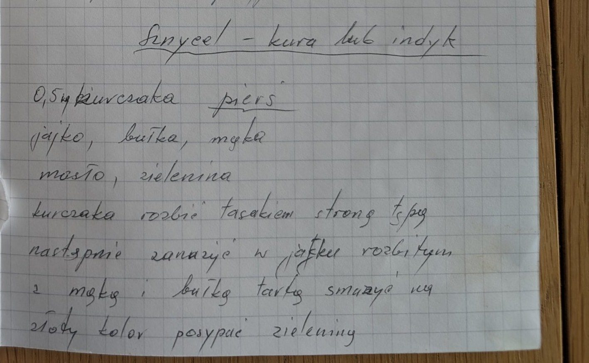
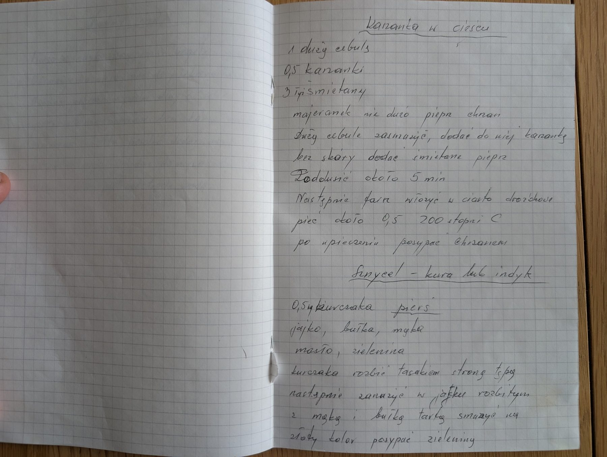

Sznycel – kura lub indyk


Składniki
- 0,5 kg piersi z kurczaka (lub indyka)
- jajko
- bułka tarta
- mąka
- masło
- zielenina
Przygotowanie
- Mięso rozbić tępą stroną tasaka.
- Zanurzyć w rozbitym jajku, obtoczyć w mące i bułce tartej.
- Smażyć na maśle na złoty kolor.
- Posypać zieleniną.
Oryginalny zapis
Sznycel – kura lub indyk 0,5 kg kurczaka pierś jajko, bułka, mąka masło, zielenina kurczaka rozbić tasakiem stroną tępą następnie zanurzyć w jajku rozbitym z mąką i bułką tartą smażyć na złoty kolor posypać zieleniną